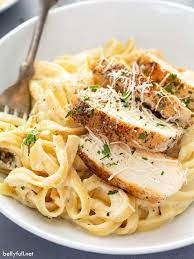

High Protein Chicken Alfredo

High Protein and Low Calorie Alfredo That Tastes Great:
This is alfredo that tastes creamy but is higher in protein and lower in calorie. It tastes great and it's easy to make, I suggest you try it!
Makes one portion.
Ingredients
- 150g chicken breast
- 100g Pasta of choice
- One third of an onion
- 166 mL cottage cheese
- 0.33 cup skim milk
- 9.3g of grated parmesan cheese
Steps:
- Cut chicken into bite sized pieces.
- Mix with spices, cook on high head until internal temperature is 165 degrees F. Set aside.
- While cooking chicken, cook pasta. Set aside when done.
- Dice onion,
- Add cottage cheese, diced onion, skim milk, grated parmesan, and spices to blender cup. Blend until Creamy.
- Add sauce to chicken pan with a teaspoon of corn starch. /li>
- When sauce thickened, add chicken back and add pasta. Simmer for 10 minutes
- Enjoy!